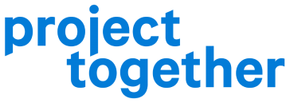

- Wir möchten drei Teams in einem Gesamtprojekt vereinen, um noch zielführender den Digitalisierungsprozess an Schulen zu begleiten.
- Wir möchten das vielseitige Team bestehend aus Lehrer:innen, Schüler:innen, Studierenden sowie Teammitglieder aus den Bereichen Medienpsychologie, Medienpädagogik, Marketing, Vertrieb, Betriebswirtschaft und Projektmanagement weiter ausbauen.
- Wir möchten mit unserer Vielseitigkeit unsere Themen ausbauen, weiterentwickeln und Lösungen fortlaufend validieren.
- Wir möchten das Projekt gemeinnützig mit externer Förderung weiter vorantreiben.
Ein Zusammenschluss aus Projekten von:

Digitalisierung hat unseren Alltag - privat wie in der Wirtschaft - grundlegend erleichtert. Für viele Lehrer:innen bedeutete Digitalisierung aber in den letzten Monaten vor allem eines: Unsicherheit und Stress.
Schulen wird zwar der Zugang technische Entwicklungen zur Verfügung gestellt, doch oft fehlen die Grundlagen diese sinnvoll einzusetzen. Die riesige Vielfalt an Angeboten und technischen Möglichkeiten überfordert. Das führt dazu, dass die Schere zwischen den Motivierten und denjenigen denen die Grundlagen fehlen, immer weiter auseinander geht. Diese Situation blockiert notwendige Entwicklungsprozesse.
Wir möchten diesen Prozess nachhaltig anstoßen mit:
1. Interaktive Infoseite
EDUmentoring bietet die Möglichkeit einen Einstieg in den digitalen Unterricht zu finden. Wir vermitteln Lehrer:innen, Grundlagendwissen und nehmen die Angst vor der digitalen Arbeit. Wichtig sind uns praxisnahe Anwendungen und Übungen zur selbstständigen Vertiefung.
aktueller Projektstand2. Austauschformat
Das digitale Lehrerzimmer schafft eine digitale und moderierte Austauschplattform für Lehrer:innen ihre digitalen Ideen weiterzuentwickeln und gemeinsam an ihren aktuellen Herausforderungen zu arbeiten.
aktueller Projektstand3. Multiplikator:in werden
Mikro-Snacks stärkt die digital motivierten Lehrer:innen digitale Themen im Kollegium anzusprechen. Das Kollegium erlangt Überblickswissen und kann gezielt nach individuellen Lösungen suchen. diese Workshops sind auf die Inhalte von der Infoseite abgestimmt, sodass die Teilnehmer dort in den Prozess einsteigen können und selber zum Multiplikator werden können.
aktueller ProjektstandNur gemeinsam können wir den Schulentwicklungsprozess starten.
Unsere Partner über das Umsetzungprogramm
WirvsVirus Solution Enabler

Für einen nachhaltigen Schulentwicklungsprozess müssen digitale Kompetenzen jetzt aufgeholt und weiterentwickelt werden!
Jetzt brauchen wir Ihre Unterstützung!
In den kommenden Wochen möchten wir unsere Angebote weiterentwickeln und schnell zu einer Lösung für die akuten Probleme im Bildungsbereich beitragen.
Es hat sich gezeigt, dass die Organisation dieses enormen ehrenamtlichen Engagements, das ständige Validieren von unseren Lösungsansätzen sowie intensive und umfangreiche Gespräche mit Lehrer:innen einen hohen administrativen Aufwand darstellen. Dafür benötigen wir drei Personalstellen zunächst finanziert für ein Jahr, um feste Strukturen für das Projekt aufzubauen, das ehrenamtliche Engagement zielgerichtet zu koordinieren und die technische Administration sicherstellen zu können.
Um den Prozess der Digitalisierung in Schulen auch langfristig begleiten zu können, bedarf es hier Ihrer Unterstützung!
Sie haben Kontakte, Ideen oder finanzielle Mittel?
Wir sind Ihnen für jede Hilfe dankbar! Können Sie als Träger unser Projekt mit aufnehmen? Kontaktieren Sie uns gern.